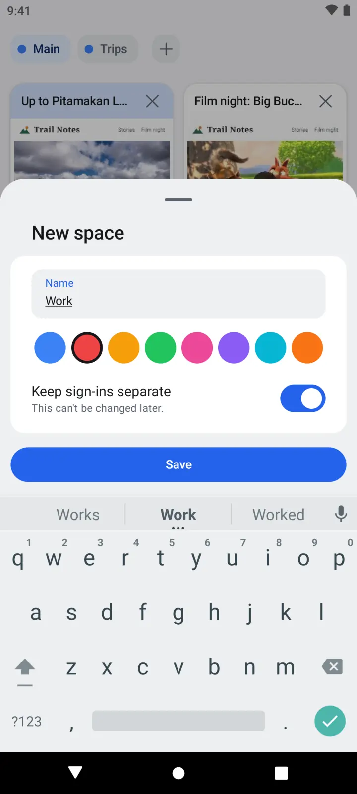
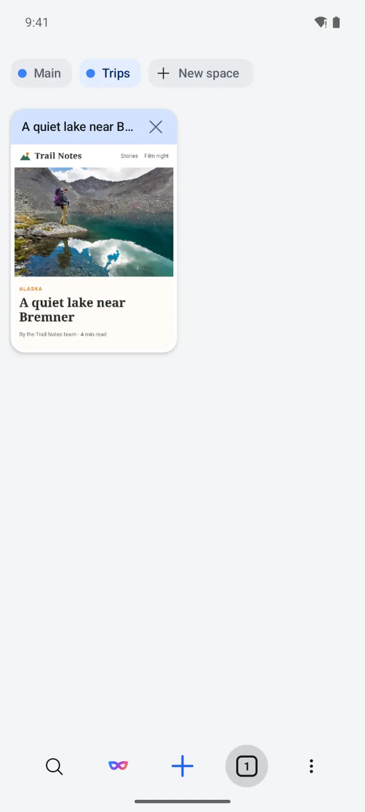
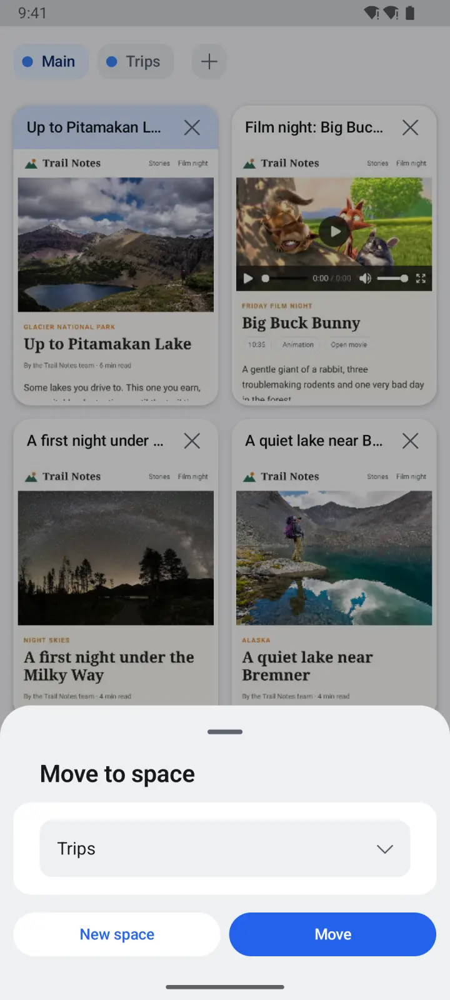
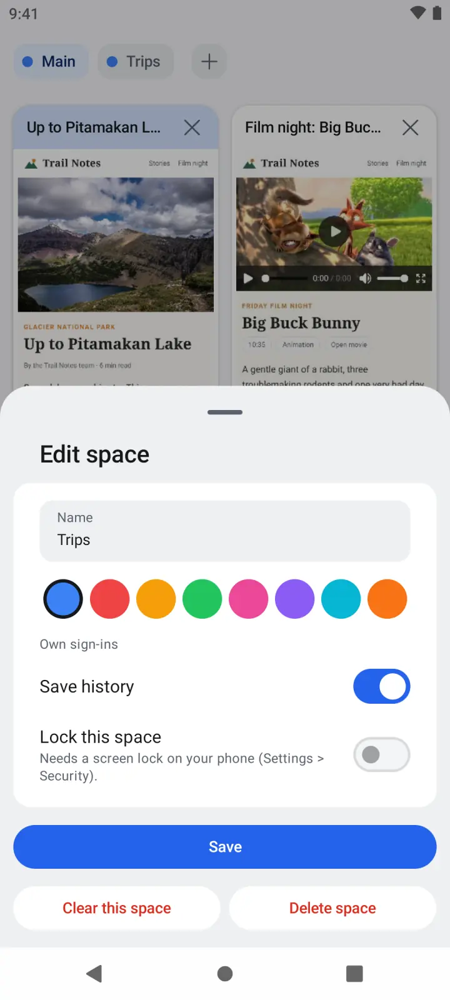
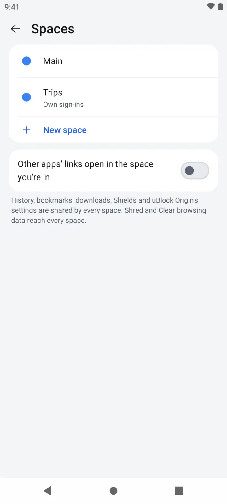

Keep sign-ins apart with spaces
How-to
A space is a collection of tabs. You might use separate spaces for work and travel and keep everyday tabs in Main. A space can keep its own sign-ins, so you can be signed in to the same site as two different people, one in each space.
Make a space
- Open the Tabs screen. Your spaces are the chips along the top.
- Tap New space at the end of the chips.
- Give it a name and pick one of the eight colors.
- Leave Keep sign-ins separate on if this space should have its own cookies, site data, sign-ins and permissions. This can't be changed later.
- Tap Save.
The space dialogs are kept small: the colors fit on one line and the buttons sit right under what they ask.

Switch spaces
Tap a space's chip on the Tabs screen. You'll see only that space's tabs, and new tabs, links you open and pop-up windows stay in it.

Other ways to switch:
- Hold the Tabs button on the bar: it lists "Go to" each other space.
- Open the ⋮ menu and tap Spaces for a small picker. The current space has a check, New space is at the end, and the gear goes to Settings > Spaces.
A tab in a space with its own sign-ins shows the space's colored dot in the address bar, between the arrows.
Move a tab to another space
Hold the tab on the Tabs screen and tap Move to space, then pick the space. Between spaces with different sign-ins, the page reopens with the other space's sign-ins. To move several at once, use Select tabs and then Move.

Change, clear or delete a space
Hold a space's chip for Edit space and Delete space (Main can't be deleted). Edit space has its name and color, whether it has Own sign-ins or Shares Main's sign-ins, and:
- Save history: whether pages opened in this space are added to your history.
- Lock this space: asks for your fingerprint, face or PIN before showing its tabs (see locks).
- Clear this space: asks first, then closes its tabs and deletes everything sites stored in it (cookies, sign-ins, site data and permissions). Other spaces stay signed in.
- Delete space: asks first, then closes its tabs for good. A space with its own sign-ins takes its stored data with it; one that shares Main's leaves Main's sign-ins as they are.

The same are in the Tabs screen's ⋮ menu, in the card for the space you're in, with Close all tabs in this space.
Settings > Spaces
Settings > Spaces lists every space with its sign-ins and its mark; tap one to edit it, or New space to make another. It also has Other apps' links open in the space you're in. Off (as it starts), links from other apps open in Main, with Main's sign-ins.

What spaces share
History, bookmarks, downloads, Shields and uBlock Origin's settings are shared by every space. Shred and Clear browsing data reach every space too. A download started from a space with its own sign-ins can't use them in every case; see why a download fails.
More in Privacy & security
- Lock Wayward down
- See what was blocked, and let a broken site through
- Choose how much Wayward blocks
- Hide pop-ups and overlays on pages
- Secure connections, Secure DNS and the other privacy settings
- Camera, notifications and other site permissions
- Use private tabs
- Lock a tab, your private tabs, a space or Downloads
- Clear data, Shred a site, or delete everything